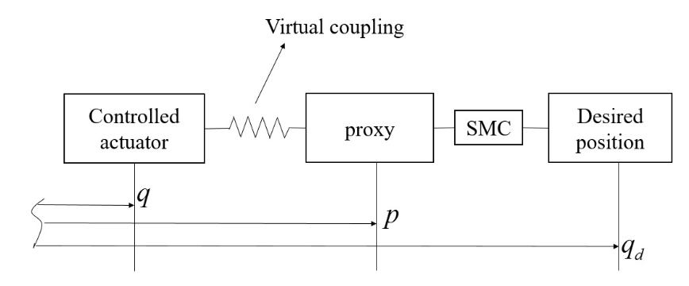
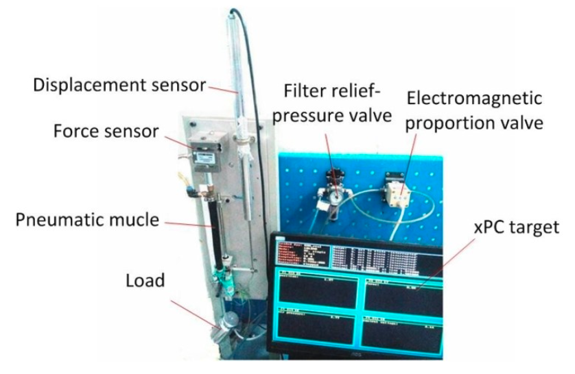
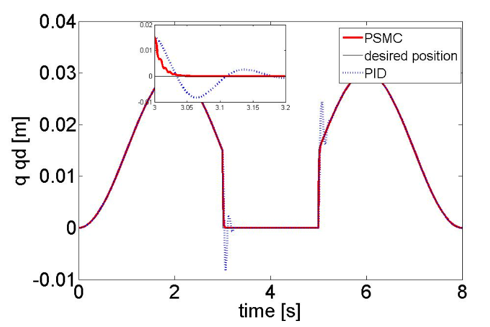
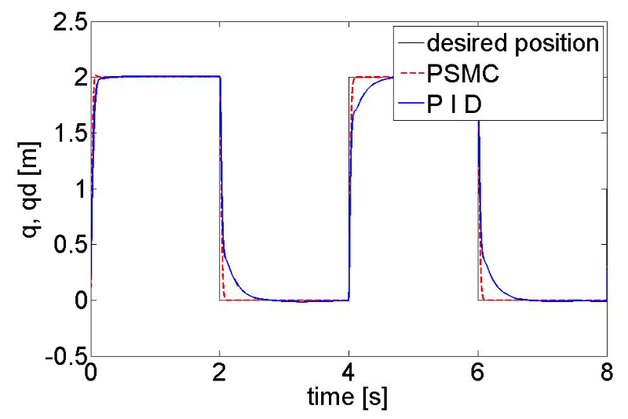
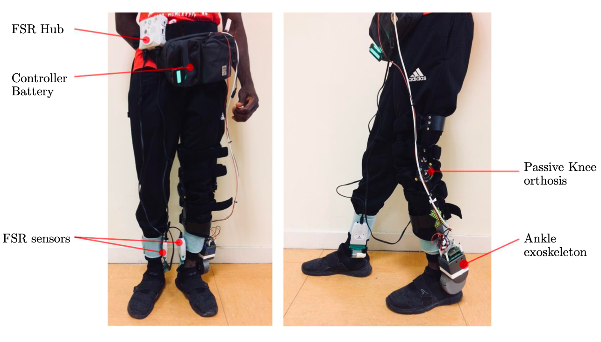
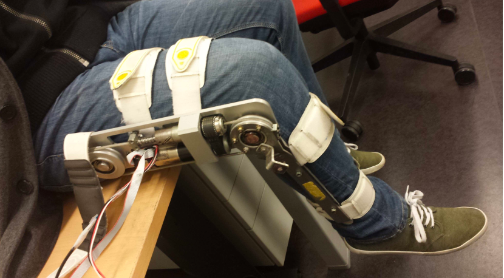

Experience
Xingji Technology Co., Ltd. Shanghai, China, 11/2021 - present
Senior Software Engineer
- We built a Big Data platform where I deployed a Hadoop cluster, Zeppelin (development tool) and Flink on a Linux system. I developed offline tasks using Spark SQL to analyze user retention rate and source/destination of user access pages and present the results using BI tool.
- I designed and implemented the backend of a system to configure the user protocol in the backgound system and retrieve it dynamically on the client like phone or car. The system was built by SpringCloud using JAVA launguage and middleware technology like Redis.
China Electronics Technology Group Corporation, Nanjing, China, 10/2019 - 10/2021
Software Engineer
- I developed a system utilizing Jquery and Spring Boot for organization management and personnel management.
Research
Proxy-based sliding mode control for a pneumatic muscle actuator system
 
I proposed a novel proxy-based sliding mode controller (PSMC) for a pneumatic muscle actuator system and analyzed the stability of the system based on Lyapunov theory. Both the safety of the system and the accuracy of position tracking were ensured simultaneously. A pneumatic muscle actuator system was built and experiments were carried out to validate the proposed controller.
Stability analysis of proxy-based control for a class of second order system
 
Inspired by the design process of the controller of a class of under-actuated systems, I developed a method to address the theoretical challenges in analyzing stability when applying proxy-based controllers to a class of second-order systems. Simulation experiments with an underwater vehicle were conducted to verify the proposed method.
Adaptive PSMC of knee/anckle joint orthosis to assist paretic patients
 
I developed an adaptive proxy-based sliding mode controller for knee and ankle orthoses by introducing an adaptive interaction method that allows online tuning of PID gains in the basic PSMC scheme. Experiments with a paretic patient showed better tracking results in the presence of parameter uncertainties and external disturbances compared to the basic PSMC.
Publications
-
Guangzheng Ding, Weiguang Huo, Jian Huang, Yacine Amirat, and Samer Mohammed. “Robust and Safe Control of a Knee Joint Orthosis.”
IEEE International Conference on Intelligence and Safety for Robotics (ISR), pp. 343-348, 2018.(Finalist for best student paper award)
[pdf]
-
Weiguang Huo, Victor Arnez-Paniagua, Guangzheng Ding, Yacine Amirat, and Samer Mohammed.
“Adaptive proxy-based controller of an active ankle foot orthosis to assist lower limb movements of paretic patients.” Robotica, vol. 37, no. 12, pp. 2147-2164, 2019.
[pdf]
-
Guangzheng Ding, Jian Huang, Bin Hu, and Zhihong Guan.
“Proxy-based sliding mode stabilization of a class of second-order nonlinear system.” 11th Asian Control Conference, pp. 2917-2922, 2017.
[pdf]
-
Guangzheng Ding, Jian Huang, and Yu Cao.
“Proxy Based Sliding Mode Control for a Class of Second-Order Nonlinear Systems.” International Conference on Intelligent Robotics and Applications, pp. 879-888, 2017.
[pdf]
Awards
Excellent New Employee, 2020
Finalist for best student paper award, ISR 2018
Excellent Graduate, 2016
First Level Graduate Student Scholarship, 2016,2017,2018
Skills
skills in research: MATLAB, LabVIEW, DSP, C/C++, Python, LATEX
skills in big data: Hadoop, Spark, Flink
skills in web development: SpringCloud, MySql, Mybatis, Redis, Kafka, Jquery, Linux